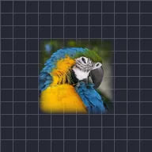

เฟเธอร์

ทำให้ขอบอัลฟาของเลเยอร์นุ่มลง โหมดเข้าด้านในจะจางเข้าหาโครงเดิม ส่วนเบลออัลฟาจะกระจายขอบที่นุ่มออกไปด้านนอกด้วย
Feather ช่วยทำให้ขอบของเลเยอร์นุ่มนวลขึ้น Strength คือความกว้างของขอบที่นุ่ม Edges คือ Inward (ขอบจางลงเข้าสู่เลเยอร์) หรือ Blur Alpha (ขอบที่นุ่มยังแผ่ออกนอกเส้นรอบนอกเดิมด้วย) ใช้ฟีเจอร์นี้หลังจาก Chroma Key เพื่อการตัดออกที่สะอาดขึ้น
การตั้งค่า
| การตั้งค่า | ประเภท | ช่วงค่า | ค่าเริ่มต้น |
|---|---|---|---|
| ความแรง | ตัวเลข | 0 ถึง 300 | 20 |
| ขอบ | ตัวเลือก | เข้าด้านใน, เบลออัลฟา | เบลออัลฟา |